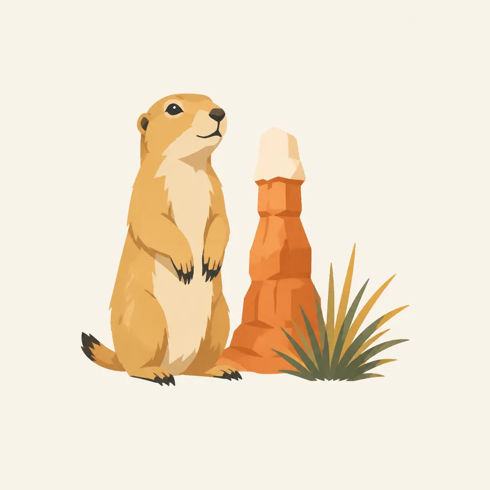
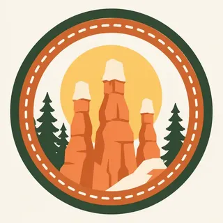

01
Bryce Amphitheater
NPS points here for the densest hoodoos. Sunrise and Sunset Points are names for the light, not a promise that you must arrive at those hours, though the low sun does the stone a favor.
TrailMark Archive Edition
Utah | Paunsaugunt Plateau
A forest rim breaks into a city of hoodoos, pink and orange stone standing in rows below the plateau.
Archive No. TM-BRC-010
National Park since 1928
Collection Southwestern Parks
Park Overview
The National Park Service describes Bryce Canyon as holding the greatest concentration of hoodoos on Earth, and the largest collection of them in the world. The Bryce Amphitheater is where that claim becomes obvious.
You do not look up from a river here. You look down from a high plateau into rows of limestone spires stained by iron and manganese. The color is the rock, not a trick of one sunset.
The park sits on the Paunsaugunt Plateau in southern Utah, a step in the Grand Staircase of the Colorado Plateau. Grand Canyon is the deep cut below. Bryce is the delicate top.
Emotional Thesis
Pines and snow sit on the rim as if the plateau were ordinary. Then the ground fails into orange towers, and the ordinary forest is only a frame.
TrailMark keeps Bryce for that drop: intimate spires, not a mile of empty air. You can almost imagine walking among them, which is why the trails exist, and why they demand care.
Landscape Highlights
01
NPS points here for the densest hoodoos. Sunrise and Sunset Points are names for the light, not a promise that you must arrive at those hours, though the low sun does the stone a favor.
02
A walk along the edge that keeps the forest on one side and the amphitheater on the other. In winter the same path can be ice. Check NPS rather than assuming a summer tread.
03
Navajo Loop and Queen's Garden take you into the hoodoos instead of over them. The climb back to the plateau is the real distance. The view down is the easy part.
Wildlife
Life at Bryce is the life of a high, cold plateau: ponderosa and fir at the rim, and smaller animals using the breaks between hoodoos.

01
Mule deer and the Utah prairie dog belong to the plateau more than to the canyon floor. Watch the meadows, not only the spires.
02
Ravens work the rim turnout as confidently as any hiker. They are not a mascot. Keep food shut.
03
The amphitheater looks empty of animals because most of them are small, nocturnal, or back in the trees you already walked through.
Geology
NPS frames the hoodoos as a geologic recipe: rock laid down, lifted, then attacked by frost and water until walls become fins and fins become towers.
01
The pink and orange are iron minerals in the Claron Formation, the limestone and siltstone that make the amphitheater.
02
A hoodoo often wears a harder cap. When the cap falls, the spire weathers faster. The skyline is temporary.
03
This is not Grand Canyon stratigraphy in miniature. The processes and the rocks are different, which is why the two parks should not share a sentence.
Snowmelt and mud on the trails below the rim. The hoodoos hold late snow in their joints long after the desert below has warmed.
The rim is busy and the afternoons can still bring lightning. Start down-canyon early. The walk up is hotter than the overlook suggested.
Clear air and fewer people on the rim. Nights drop fast at this elevation. A light layer is not optional just because the stone looks warm.
The amphitheater in snow is a different park, quiet and sharp. Some roads and trails close or turn to ice. Read the NPS alert before you trust a summer map.
Photography
A frame full of hoodoos becomes texture. A few spires, a tree, and a shadow do the work.
01
Morning and evening separate one tower from the next. Flat noon light glues them into a single orange wall.
02
A pine at the edge gives the amphitheater a size. Without it the hoodoos could be inches tall.
03
Do not step off the rim or climb a fin for a cleaner angle. The NPS protection page exists because that photograph has already been taken too often.
Field Notes
Bryce is the park that proves a canyon can be crowded with stone and still feel delicate.
TrailMark Field Notes

Badge Story
The Bryce mark has to read as many spires, not one mesa. If it looks like Grand Canyon, it has failed.
Pink-orange is the Claron rock, repeated.
A dark tree at the rim keeps the badge from floating.
The shape is an amphitheater seen from above, which is how almost everyone first meets it.
Archive No.010
LocationBryce Amphitheater
ReleaseHoodoo Mark
Stewardship / Safety
Bryce looks friendly from the rim and less friendly halfway up a trail. Check NPS for weather and closures. This page will not know tomorrow's ice.
Do not climb hoodoos or cut between them. The rock is the resource.
Carry water even when the overlook feels cool. The walk back up is where people get into trouble.
Lightning on the rim is ordinary in summer afternoons. Leave the point if the sky stacks.
Winter trails can be hard ice over a drop. Microspikes are a tool, not a dare.
Current conditions, fees, and alerts are on the National Park Service site.
Continue the Archive
Zion and Grand Canyon continue the Colorado Plateau story at different depths. Both are already open in this archive.